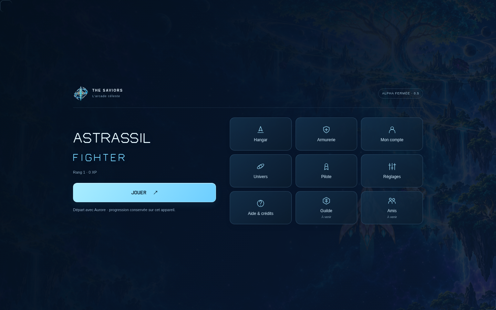

Installer la bêta
Téléchargez l’APK signé actuel et ouvrez-le sur votre téléphone Android.
Télécharger l’APK Android ↓Installation directe, sans Google Play. Pour une mise à jour, conservez l’application et ses données.L’arcade céleste by The Saviors
Trente failles.
Un ciel à reconquérir.
Prenez les commandes, composez votre équipage et faites évoluer votre aéronef. Cette bêta est réservée aux testeurs invités.
Téléchargez l’APK signé actuel et ouvrez-le sur votre téléphone Android.
Télécharger l’APK Android ↓Installation directe, sans Google Play. Pour une mise à jour, conservez l’application et ses données.Ouvrez le jeu à jour dans votre navigateur habituel avec le lanceur Windows.
Télécharger pour Windows ↓Windows 10/11, 64 bits. Connexion Internet nécessaire. Version portable.Sur iPhone, ouvrez la version navigateur dans Safari. Le jeu s’ouvre aussi sur ordinateur.
Ouvrir le jeu ↗Version navigateur : aucun fichier IPA ni application iOS native à installer.Votre clé personnelle de testeur est nécessaire sur chaque plateforme. Si vous n’en avez pas, demandez-la à la personne qui vous a invité. Cette page ne distribue aucune clé.
Le jeu, dans sa nouvelle identité Starlight.

L’envoi est manuel. Un combat en cours n’est pas un point de reprise.
Le jeu est hébergé temporairement sur un PC. Il doit rester allumé et connecté pour que le jeu et les sauvegardes en ligne soient accessibles.
Si l’accès est indisponible, réessayez plus tard. Votre clé reste personnelle.